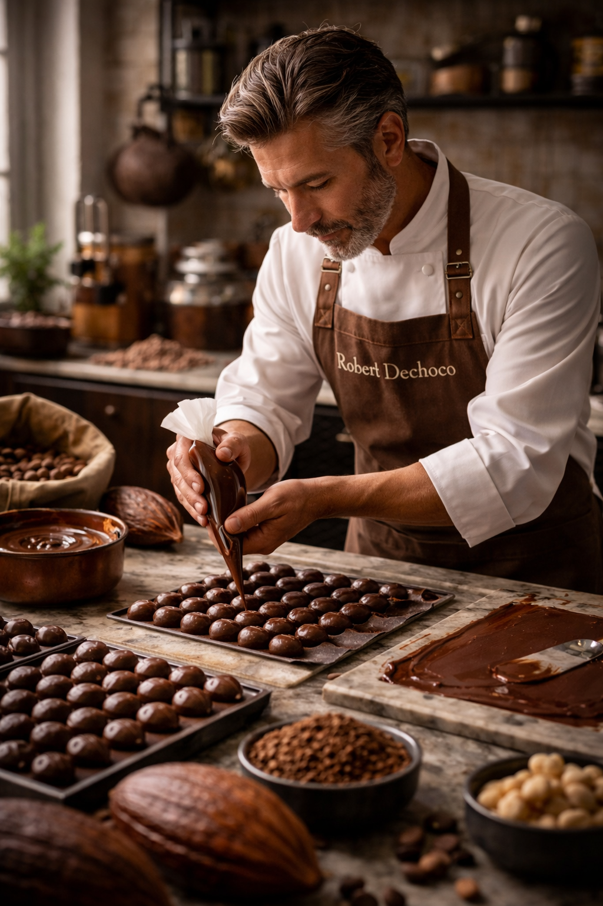

Robert Dechoco, grand maître chocolatier
Maître chocolatier d'exception, Robert Dechoco incarne l'excellence et la passion portées à leur plus haut niveau.
Derrière chacun de ses gestes se cache un savoir-faire rare, forgé par des années de maîtrise, d'expérimentation et
d'exigence absolue.
De la sélection des fèves les plus nobles jusqu'au façonnage final, rien n'est laissé au hasard.
Robert Dechoco possède une compréhension instinctive du cacao, capable d'en révéler les nuances les plus subtiles et d'en
sublimer chaque arôme avec une précision remarquable.
Son talent réside autant dans la technique que dans la créativité :
il transforme des ingrédients simples en véritables œuvres gustatives, où textures et saveurs s'équilibrent avec élégance.
À travers ses créations, il ne propose pas seulement du chocolat, mais une expérience unique — la signature d'un artisan
d'exception, dont le savoir-faire dépasse le simple métier pour devenir un véritable art.
Découvrez son incroyable talent dans notre Boutique